霊山寺/奈良県奈良市
霊山寺は奈良市の郊外にあるそれはそれは古い歴史を持つ寺である。
しかし近年、どうやら面白そうな事になっている御様子。
いざ行かん、秋の奈良。
霊山寺門前。門前とはいえいきなり赤い鳥居のお出迎え。
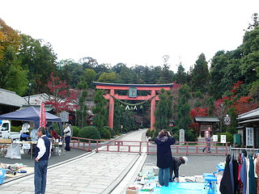
門前ではフリマをやっていた。
かなり怪しい健康グッズや超Z級のマンガといった超絶の商品ラインナップに奈良の奥深さを感じつつも本来の目的を思い出し早速入場。
中に入るとすぐにバラ園。
実は霊山寺といえばこのバラ園が有名なのだ。
人生の輪廻を表したバラ園、ということだったが修行のまるでなってない拙者には全く理解できなかったぞよ。
阿修羅薔薇とか地獄薔薇とかあればおバカな私でも判りやすかったんですけど…
訪れた日も秋バラが見事な花をつけていたが…バラに興味が無いので10秒ほど堪能させてもらってとっとと次へ進む。
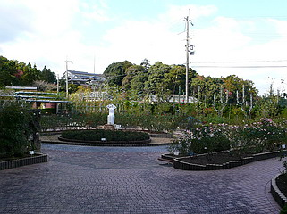
丁度、紅葉が見ごろだった。紅葉の下には行基像が。
バラはともかく紅葉見物はやぶさかではないゆえ人のあまりいない境内をゆっくり散策する。
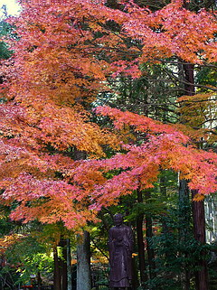 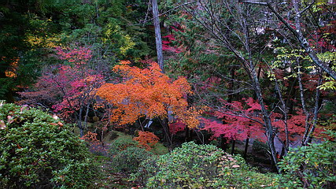
立派な守り本尊がズラリとお出迎え。
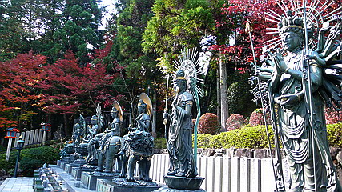
この奥には小さな川沿いに本堂や三重塔などが並び、重文のオンパレードなのだが、その辺のまっとうなお寺案内は他のガイドブックなどにお任せするとして、ここで話題にしたいのは境内の一画にある弁才天堂だ。
この弁才天堂、昭和10年に建てられた現世利益の道場だそうな。
古刹然とした霊山寺の中でもこの場所だけが壁で仕切られ、独特の雰囲気をかもし出している。
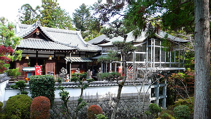
何というか、古式ゆかしき仏教のお寺なのにここだけは民間信仰というか流行り神を祀ってある雰囲気なのだ。
まあ、平たく言うと俗っぽいってことですね。
極め付けが弁才天堂の背後にあるコレ。
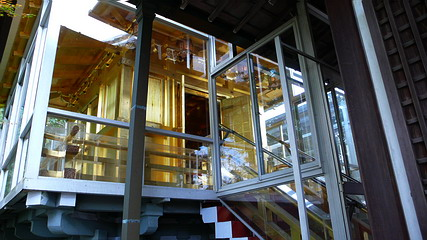
ガラスで出来た覆堂の中に金ぴかのお堂が納まっている。
これは黄金殿といい、昭和36年に出来た総金箔貼りのお堂である。手摺まで金ぴか。
金閣寺、中尊寺に並ぶ日本三大金堂だとか。ホントかなあ〜。
で、その隣には銀色に光るお堂が。
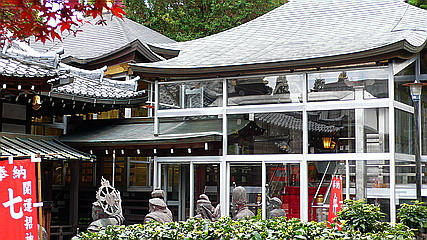
こちらは白金殿。
白金箔を張った世界初のプラチナのお堂である。
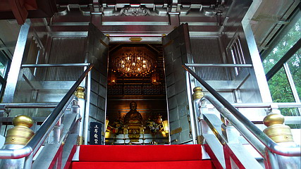
「銀閣って銀色じゃないのかよお〜」などと修学旅行でお嘆きの中坊におかれましては是非ここを参拝して溜飲をさげていただきたいものである。金銀揃い踏みの素晴らしいお堂であった。
この霊山寺、小野妹子の息子が薬草湯を開いたのがそもそもの始まりで、境内にはそれにちなんだ薬師湯殿という浴場がある。
境内を一回りした後、折角なので私も入浴してみました。
いい湯だったのだが、生憎タオルを持っておらず、仕方なくやや寒い更衣室で気合の自然乾燥をしていたら返って冷えちゃいました…
さて、そんなこんなで霊山寺拝観を済ませ少し離れた霊山寺霊園に向かう。
そこには素敵な場所があるという情報をキャッチしていたのだ。
坂を上っていくと霊山寺の霊園が見えてくる。
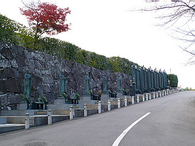
ズラリとお地蔵さんが並んでいる壁の向こうには広大な墓地があった。
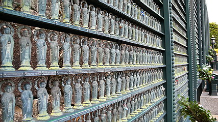
そしてドーンと立派な地蔵堂が建っている。
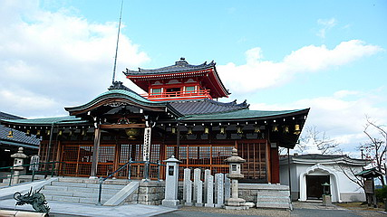
地蔵堂の脇にある白い建物、それこそが今回の霊山寺訪問のメインメニュー「地獄洞」。
あまりにも壮大すぎる説明書きなのでよ〜〜〜くご覧下さい。
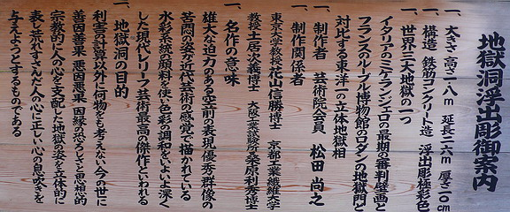
ええええええ〜。最後の審判と地獄門が世界三大地獄にエントリーされてんの〜？
世界三大地獄といったらコレとコレとコレじゃあないんですかい？
八角形のお堂の上にはお地蔵さんが鎮座していて心なしか「あんまり期待すんじゃねえぞ」と仰っているような気が…
…などと思いつつも世界三位、東洋太平洋級一位という素晴らしいランキングに期待値は青天井。
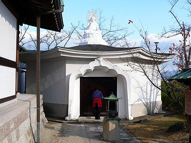 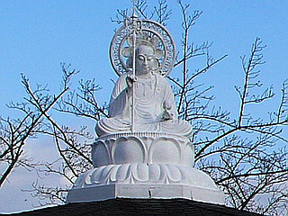
早速、受付の方にお願いして扉を開けてもらう。
扉を開けたらこんな感じ。おおお、ワクワクさせるじゃねえか！
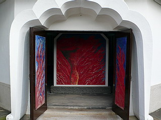
…と、盛り上がったのも開扉後わずか10秒。
円形の壁に地獄絵（レリーフ）が架かっているだけでした。
地獄洞の「洞」は何なのさ〜。
洞っていったら普通洞窟でしょ。で、そこに地獄のジオラマがあって、んでもって血まみれ人形の首とかがぴゅー、ってヤツじゃないの？ないじゃん。首ぴゅー。
きっと壁の絵が回転扉になっていてその先に秘密の洞窟があるに違いない。そこに首ぴゅーがみっちり並んでいるはず。
何たって世界三大地獄なんだから。…と、一枚一枚検分してみたが、案の定徒労であった。
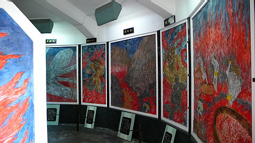
正面の閻魔大王を中心に牛頭馬頭、八大地獄などの様子がレリーフにしたためてある。
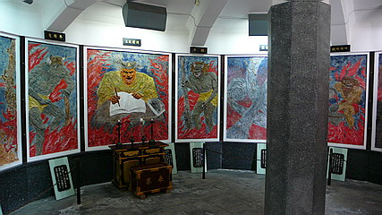
東洋一の立体地獄相、現代レリーフの最高傑作…
う〜む〜。
コレは看板に偽りあり、か？
いやいや、仏教では十善戒という戒めがあり、その中に不妄語（嘘をつかない）というのがあるはず。
奈良屈指の古刹が嘘をつくはずがないではないか。
…ということはここの地獄はコレとかコレとかコレよりも素晴らしい地獄だ、という事なんですね…
私の修行不足でした！
…などとネチネチ言ってると不悪口（悪口をいわない ）の戒律を犯してしまうのでこの辺にしときます。
でも不綺語（お世辞をいわない）というのもありますんで、あんまり褒めちぎるのもナシですね。
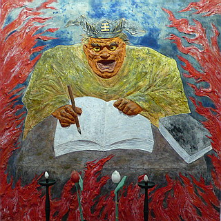
まあ、しばし雄大な迫力のある空前の表現優秀群像の苦悶の姿をご堪能ください。
| 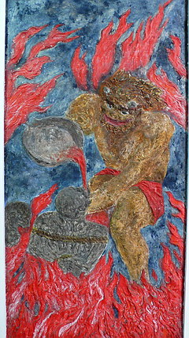 |
|
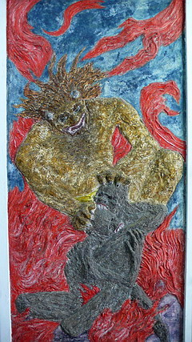 |
|
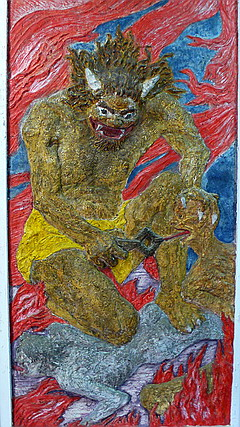 |
叫喚地獄
|
|
活地獄
|
|
大叫喚地獄
|
| 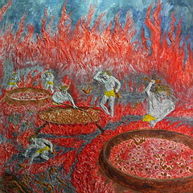 |
|
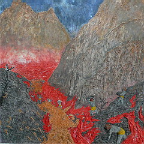 |
|
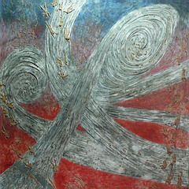 |
焦熱地獄
|
|
合地獄
|
|
地獄界
|
| 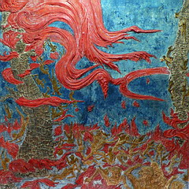 |
|
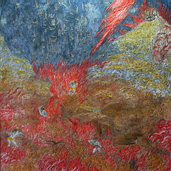 |
|
|
身洋受苦脳別所
|
|
阿鼻地獄
|
|
|
期待値が高かった分、ガックリも来たが…こうして見ていると、結構迫力があるじゃあないか。
いやいや。タイや台湾の地獄に比べたら可愛いもんですけどね。
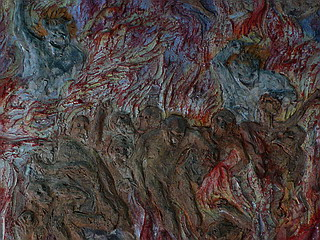 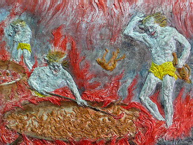
ほとんどの地獄の亡者はデフォルメされており、その表情は伺えない。
これは一人一人の苦しみに焦点が行きがちな地獄の表現に於いては特異な表現手法だと思う。
地獄の責め苦を俯瞰して見る事で地獄の全体像を表現しよう、というわけですね。
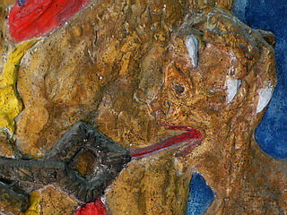 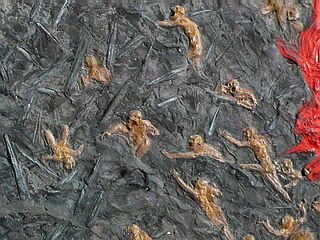
しかし地獄を表現するそもそもの目的は地獄の恐ろしさを伝える事で人に善行を啓蒙するのであって、悲しいかな地獄を俯瞰したところでその恐ろしさ、苦しさはあまり伝わってこないんじゃないでしょうか。
地獄図の本懐はディテールに宿る、という事であえて目を凝らして責められる亡者達を見てみよう。
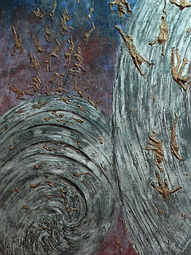
大暴風雨に飲み込まれ地獄へ落ちる亡者の様子。
人が木の葉のように吹き飛んでいるのがお分かりいただけるだろうか。
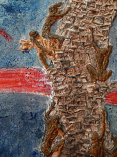
火炎の熱さに耐えかねて木に登る亡者。しかしそこにも火の手が。
この辺で首ぴゅーとか目玉ピューとかあっても良かったんじゃないっすか？
人が個性や感情を剥奪されて佃煮のように扱われているシチュエーションが恐怖だ、という地獄絵なんでしょうね。
閻魔サマと正対するのはお地蔵サマ。
足元にシッカリ賽の河原があり、子供達がお地蔵さんにすがっている姿には泣けてくる。
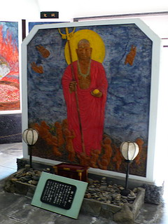 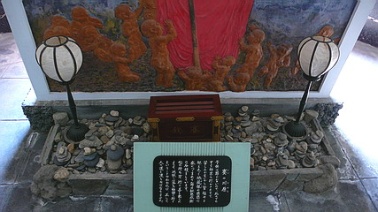
そんなこんなで世界三大地獄である地獄洞の拝観終了。
あっという間でした。
地獄洞の隣にある地蔵堂の中はごくごく普通の様子。
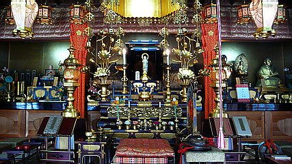
ん？天井から紐がぶら下がっているぞ？
よく分からないがとりあえず引っ張ってみると…
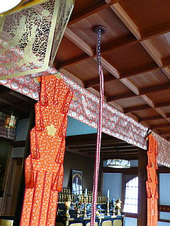
んぐうぉぉぉぉ〜んんんん
…と頭上から鐘の音が。
ここでもう一度地蔵堂の外観をご覧頂く。
そう。階上の二階部分にある鐘が鳴るのであった。
面白かったので何度も鳴らしちゃいました。
その他、霊園内には四国八十八ヶ所霊場などもあり、霊園にしておくには惜しい充実っぷりだった。
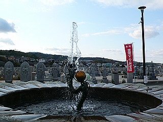
帰り道、霊園と霊山寺の間にある老人ホームらしきところで火の手が上がっているのを見かけた。
小さなやぐらのようなモノを燃やしている。これは何かの宗教行事なのだろうか。
みなさん地獄には一切縁のなさそうな笑みをたたえておりました。
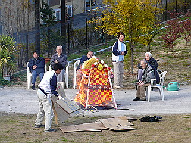 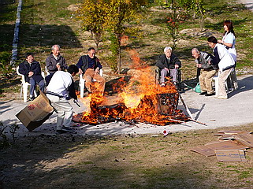
お爺ちゃん、あんまり前に座ってると危ないからね…あっ！お爺ちゃんまで燃えて天に昇りそうになってました…
幸いお爺ちゃんは職員さんに引っ張られて事なきを得た。
そして燃やされた灰だけが高く高く秋の空に昇って行ったのであった。
2007.11.
珍寺大道場 HOME